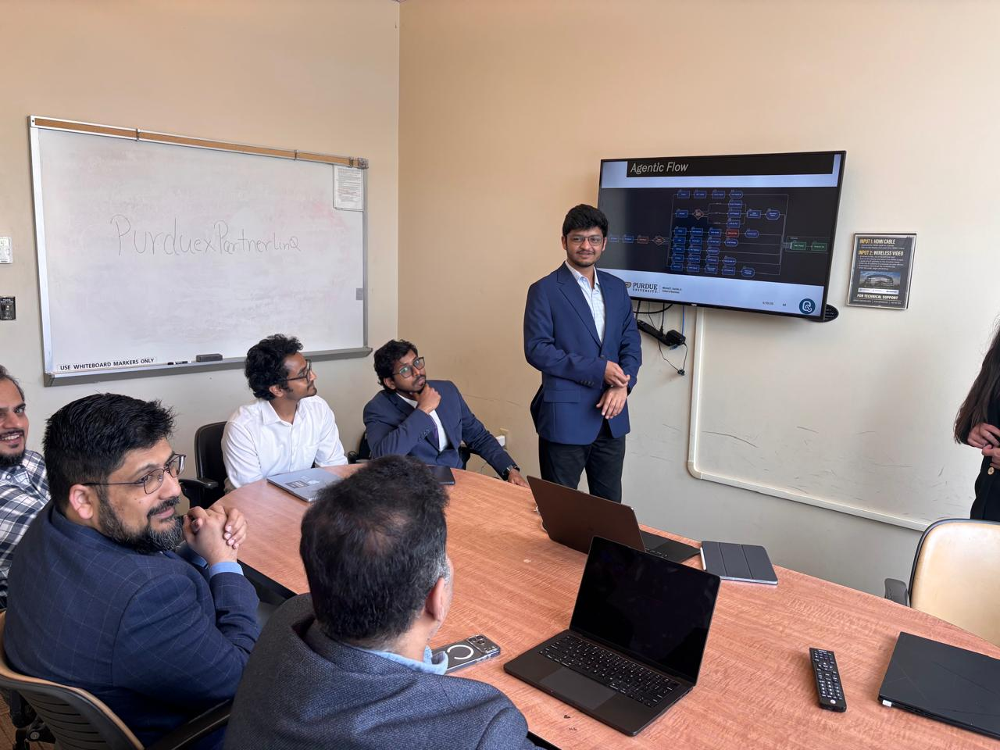

About me
I’m Himanshu, a data scientist who trusts a number about as much as a stranger’s promise, which is to say: verify first, believe later.
I build things that live between messy data and real decisions, forecasting models, causal inference that tells you what actually moved the needle versus what just looked good in a chart, RAG agents that read thousands of documents so you don’t have to, pipelines that catch a bad row before it becomes someone’s confident wrong answer.
Undergrad in India, a master’s in business analytics at Purdue, and a running habit of not believing a result until I’ve poked at it from three different angles, statistically, analytically, and usually one more time out of stubbornness. These days that shows up across data science, analytics and AI engineering: building models, fine-tuning smaller ones and watching them go head to head with bigger ones, and figuring out where automation actually saves hours versus where it just relocates the mess.
I like that this field rewards curiosity over confidence. Ask me “wait, is this actually true” and I’ll probably already be halfway to an answer.

Let’s connect.
Graduated August 2026 and currently on OPT, authorised to work in the US now. Looking for opportunities in data science and AI.
himanshuladdhad11@gmail.com